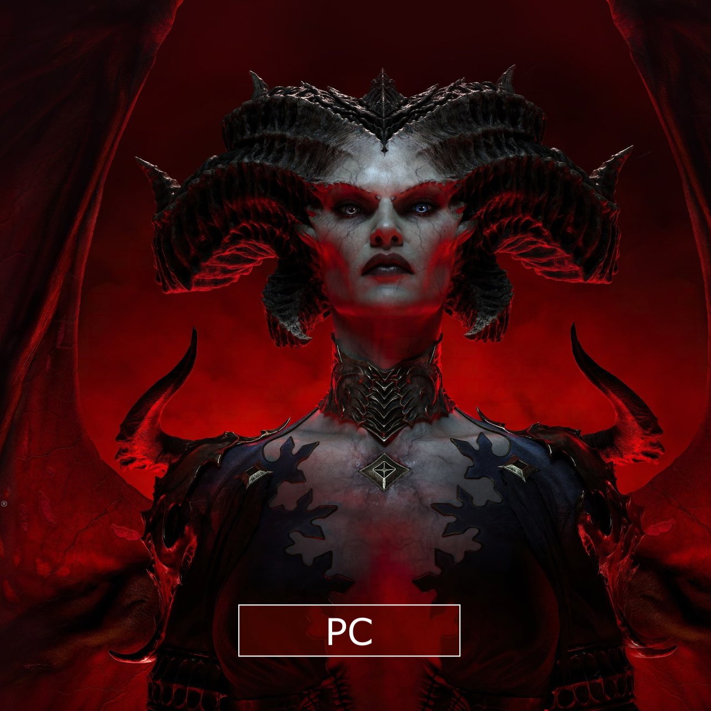
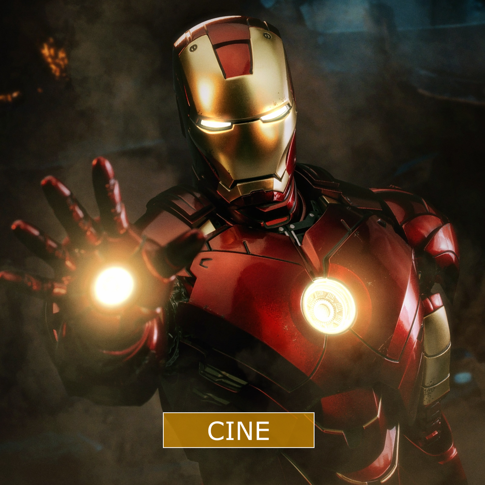
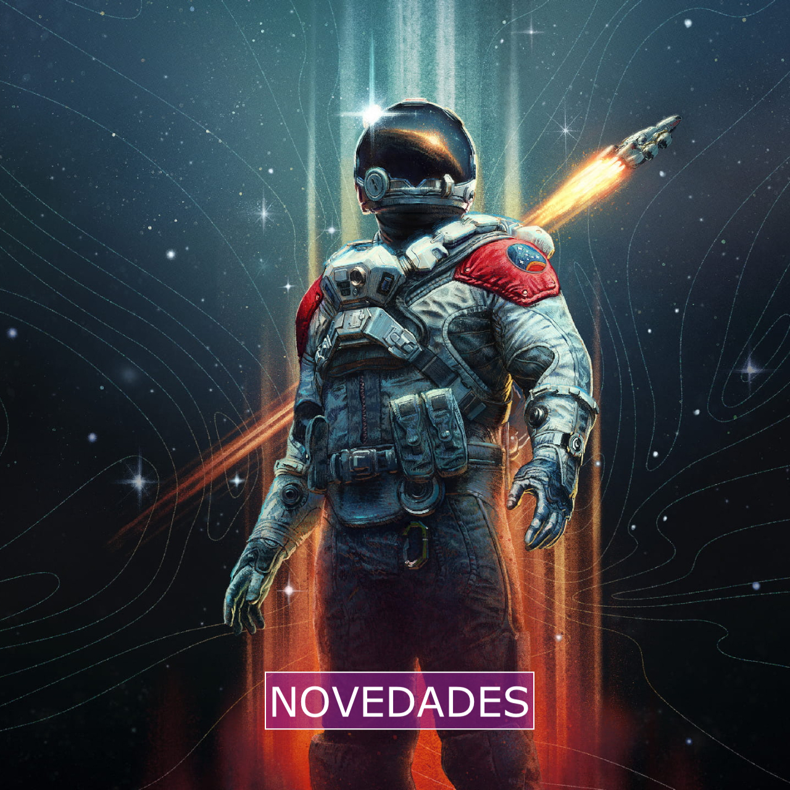
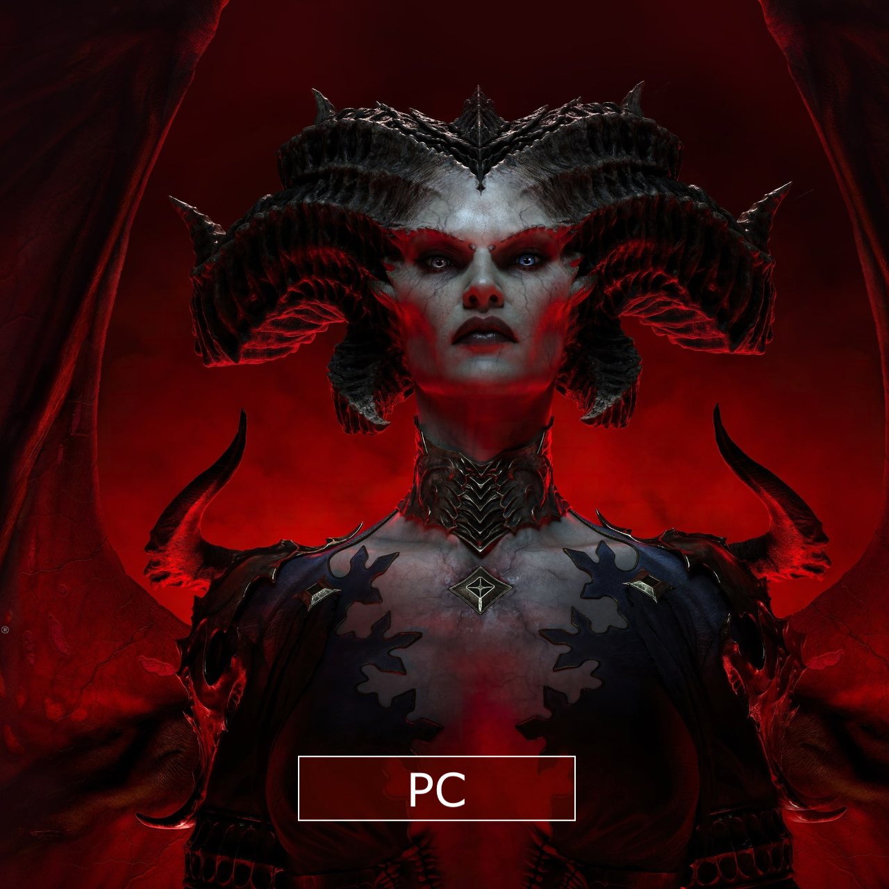
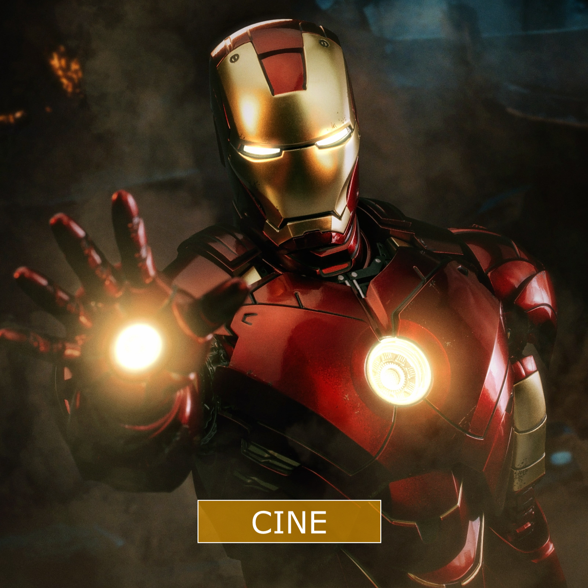
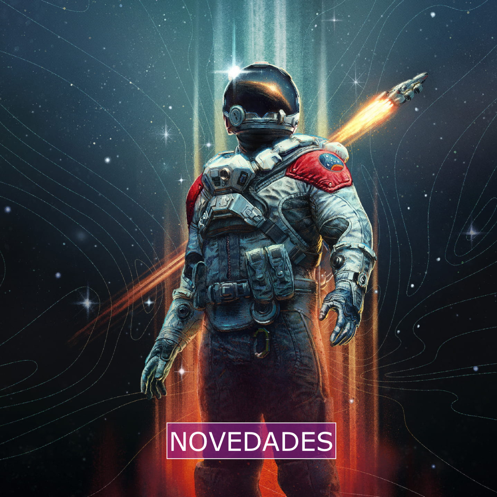

El emocionante lanzamiento de Starfield está a punto de suceder, y si eres uno de los afortunados que ya ha reservado su copia, aquí tienes toda la información que necesitas para estar listo. No pierdas tiempo y asegúrate de pre-descargar el juego en tus sistemas PC y Xbox Series X/S. Bethesda ya ha lanzado un parche previo al lanzamiento, así que es una buena idea estar preparado con anticipación y evitar esperas innecesarias en el día del lanzamiento.
El de fechas para Starfield está bastante claro y sin sorpresas inesperadas. La primera parada es la publicación de análisis, incluyendo el nuestro, que tendrá lugar el 31 de agosto a las 18:00 horas (hora peninsular española). Esta fecha incluye el embargo para los directos en Twitch de los creadores de contenido, por lo que podrás disfrutar de retransmisiones en vivo desde ese mismo momento.
La siguiente parada llega a solo ocho horas después. El acceso anticipado, reservado para aquellos que hayan adquirido las ediciones Premium y Coleccionista, comenzará el 1 de septiembre a las 2:00 horas (hora peninsular española). Traducido, esto significa la noche del 31 de agosto al 1 de septiembre.
Finalmente, la tercera y última parada será el de septiembre de 2023 a las 2:00 horas (hora peninsular). En otras palabras, podrás sumergirte en el juego en la noche del 5 al 6 de septiembre. Tanto los jugadores de PC como los de Xbox Series X/S tendrán acceso al juego mediante la reserva de la edición Estándar, compra directa o a través del servicio Game Pass. Un recordatorio importante: el lanzamiento está a la vuelta de la esquina, así que mantente alerta ya que existen filtraciones con spoilers. ¡Precaución!


 





¿Cómo puedo realizar una compra en gamezonex?
Para realizar una compra en gamezonex, simplemente sigue estos pasos:
1. Explora nuestra colección de videojuegos y elige los que te interesen.
2. Agrega los juegos seleccionados a tu carrito de compras.
3. Ve a tu carrito y revisa los artículos.
4. Procede al proceso de pago y proporciona la información necesaria.
5. ¡Listo! Recibirás una confirmación de tu pedido por correo electrónico.
¿Cuáles son las opciones de pago aceptadas?
Aceptamos tarjetas de crédito/débito Visa, MasterCard y American Express.
También ofrecemos
la
opción de pago a través de PayPal para mayor comodidad.

¿Cuándo recibiré mis juegos después de hacer una compra?
Después de realizar una compra exitosa, recibirás un correo electrónico de confirmación. La
mayoría
de los juegos se entregan de forma digital y recibirás las instrucciones para descargarlos e
instalarlos. Los plazos pueden variar según el juego y la plataforma.
¿Cuál es la política de devoluciones de gamezonex
Entendemos que las cosas pueden no salir como se esperaba. Si tienes algún problema con tu
compra,
contáctanos a través de nuestro formulario de contacto o envía un correo a support@gamezonex.com
dentro de los 7 días posteriores a la compra. Consulta nuestra política de devoluciones en
[enlace a
la página de Política de Devoluciones] para obtener más detalles.
¿Cómo puedo contactar al servicio al cliente?
Si tienes alguna pregunta, inquietud o problema, no dudes en ponerte en contacto con nuestro
equipo
de servicio al cliente. Puedes llenar nuestro formulario de contacto en [enlace al formulario de
contacto] o enviar un correo a support@gamezonex.com. ¡Estamos aquí para ayudarte!